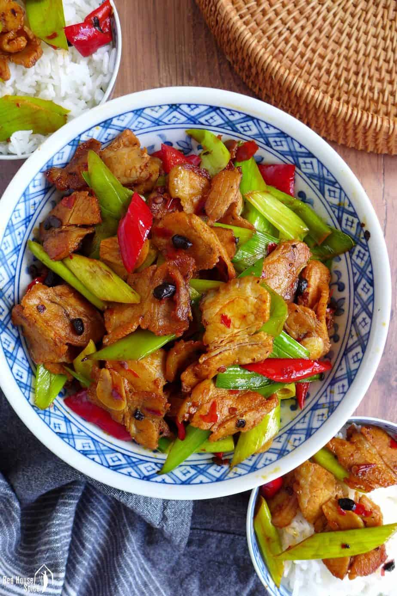

Twice Cooked Pork

Description
Twice cooked pork is a classic Sichuan dish cooked with a unique Sichuan cooking method- double cooking or Hui Guo (回锅). So the other name for this dish is doubled-cooked pork or Hui Guo Rou.
Ingredients
- Pork belly
- Aromatics (garlic, ginger, and scallion)
- Fresh peppers
- Garlic sprouts
- Doubangjiang
- Douchi
- Sichuan peppercorn
- Sugar
- Light soy sauce
Instructions
- Place pork belly in a large pot with enough cold water to cover it. Add 2 green onions and 4-5 Sichuan peppercorns (you can skip them if you don't have some by hand). Bring to a boil and simmer for 25 to 30 minutes. If you are cooking a larger amount, cut the pork belly into 15cm sections. Transfer out and set aside to cool down. Then cut the pork belly into 1mm thick slices.
- Cut the garlic sprouts and leaves into 1.5-inch sections. Cut green peppers, and chop the ginger, garlic, and green onions. Roughly chop dou-chi too.
- Heat up around 1 teaspoon of oil in a wok (not too much, otherwise the dish might be over greasy), and fry the pork belly for around 1-2 minutes (Note 2)until they begin to lose oil and are slightly brown and curled.
- Transfer the pork slices out and leave oil only, fry doubanjiang over slow fire until the oil turns red. Add ginger, garlic, and scallion until aroma. Place dou-chi in, fry for another half minute. Keep slow fire when adding the seasonings.
- Return pork slices and give a big stir fry to combine well. Add garlic sprouts, green peppers, and sugar, and pour in light soy sauce over the edge of the wok. Give everything a big stir fry to mix well. Serve immediately. Don't kill the freshness.